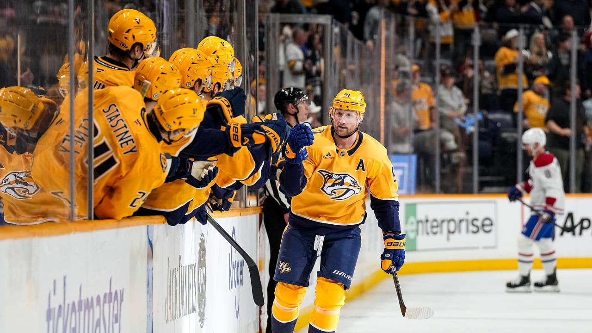
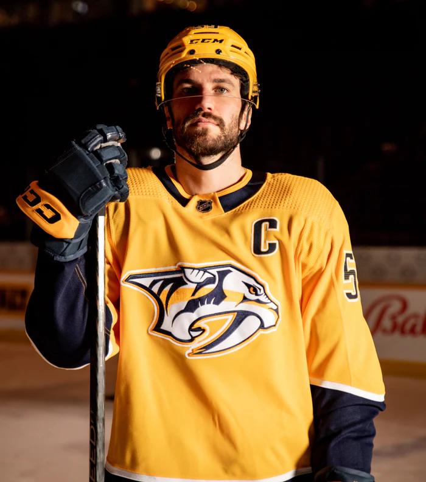
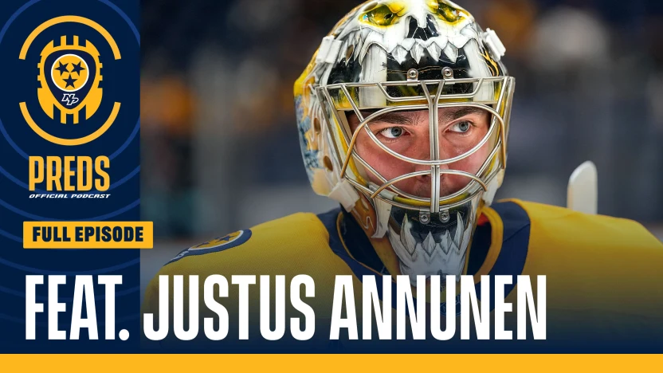
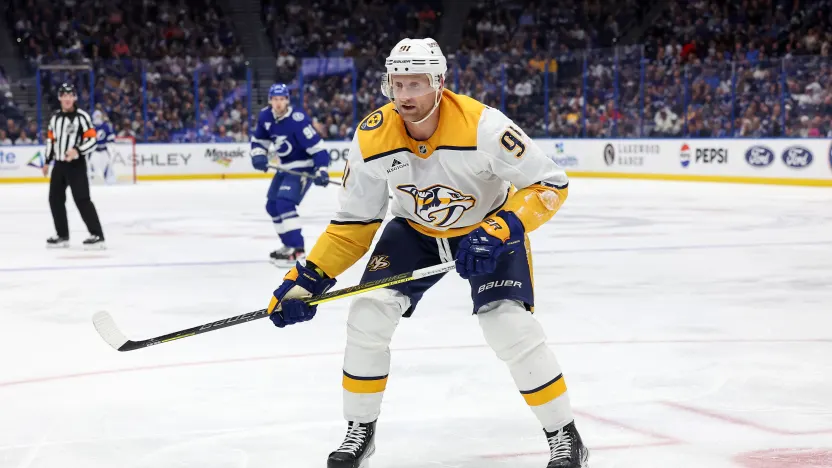
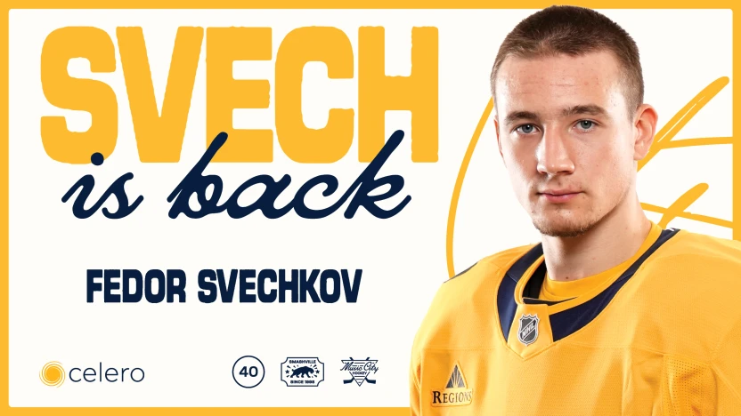

BEM VINDO AO
NASHVILLE PREDATORS
Fundado na expansão de 1998, o Nashville Predators provou que o hockey no Tennessee não era apenas possível, mas um sucesso absoluto. O time é famoso pelo seu uniforme amarelo vibrante ("Gold") e pelo logotipo do tigre dentes-de-sabre, inspirado em um fóssil encontrado durante a construção de um prédio em Nashville.
A identidade dos Predators sempre foi moldada por defesas sólidas e goleiros de elite. O ápice da franquia foi em 2017, quando entraram nos playoffs como a última vaga e chegaram à final da Stanley Cup, perdendo para os Penguins. A torcida na Bridgestone Arena é lendária por seus gritos coordenados para intimidar os goleiros adversários após cada gol marcado.
Em 2026, os Preds abandonaram de vez a postura conservadora. A diretoria "abriu o cofre" e trouxe as maiores estrelas disponíveis no mercado para transformar o time em uma potência ofensiva imediata, unindo veteranos multicampeões a uma defesa que continua sendo uma das melhores da NHL.
CONHEÇA OS
JOGADORES

Roman Josi
Defensor
2011–Atualmente
AGENDA
26
28
29
2
4
6
NOTÍCIAS

Podcast oficial dos Preds: Big Juice e o Empurrão Final com Justus Annunen
Goleiro do Nashville se junta ao programa na reta final da temporada.

DIA DE JOGO: Preds x Lightning, 29 de março
Nashville encerra fim de semana consecutivo com visita a Tampa

Predadores assinam contrato de dois anos com Fedor Svechkov no valor de US$ 2,5 milhões
A escolha de primeira rodada do Nashville em 2021 está em sua segunda temporada completa na NHL e estabeleceu um recorde pessoal em assistências.